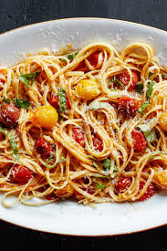

Pasta recipe

Ingridients
- 1 pound pasta
- Kosher salt
- ½ cup olive oil
- 2 large garlic cloves, finely chopped
- 3 pints cherry tomatoes
- ½ teaspoon freshly ground black pepper
- Pinch of sugar
- 1 cup coarsely chopped fresh basil
- Freshly grated Parmesan (for serving)
Preparation steps
- Cook pasta in a large pot of boiling salted water, stirring occasionally, until al dente; drain and transfer to a large bowl.
- Meanwhile, heat oil in a 12" skillet or wide heavy saucepan over medium-high. Add garlic, then tomatoes, pepper, sugar, and 1 tsp. salt. Cook, stirring occasionally, until tomatoes burst and release their juices to form a sauce, 6 to 8 minutes.
- Toss pasta with tomato sauce and basil. Top with Parmesan.